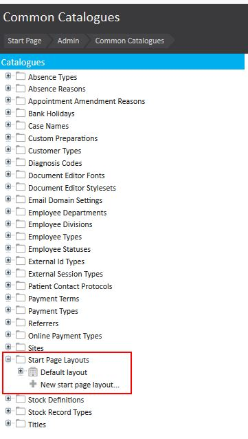
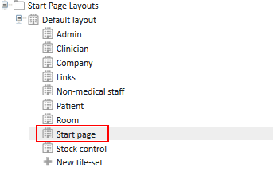
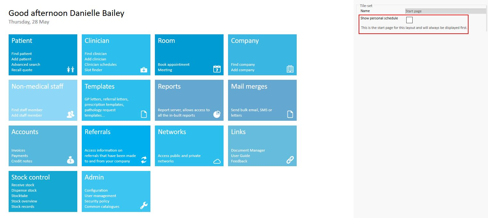

Meddbase has a customisable Start Page. This allows for clients and users to set their layout depending on business needs.
More information about the changing the layout of the Start Page can be found here: Changing Start Page Layouts
This article will guide you through how to add the users diary to the Start Page.
In order to update this setting to display the diary follow Start Page > Admin > Common Catalogues > Start Page Layouts.

From here the various layout options will be displayed. This can then be expanded, and the start page option can be selected.

Once this section is selected an additional tick box option will appear in the top right-hand corner 'Show Personal Schedule'.

To display the schedule on this layout the tick box can be selected. Should this be required on any of the other layouts these can also be selected from the layout options and the same tick box will display and can be selected.
Remember to save this setting for it to take effect.